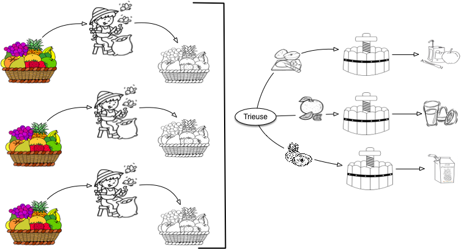
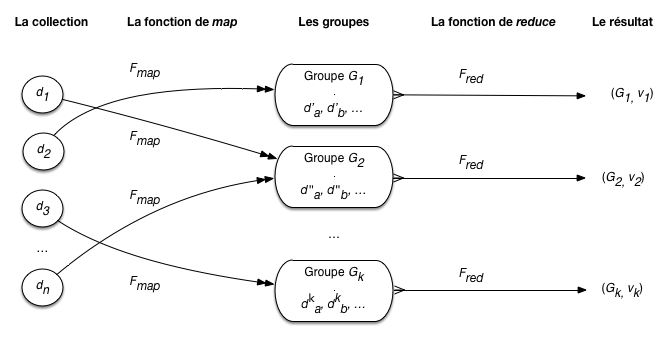
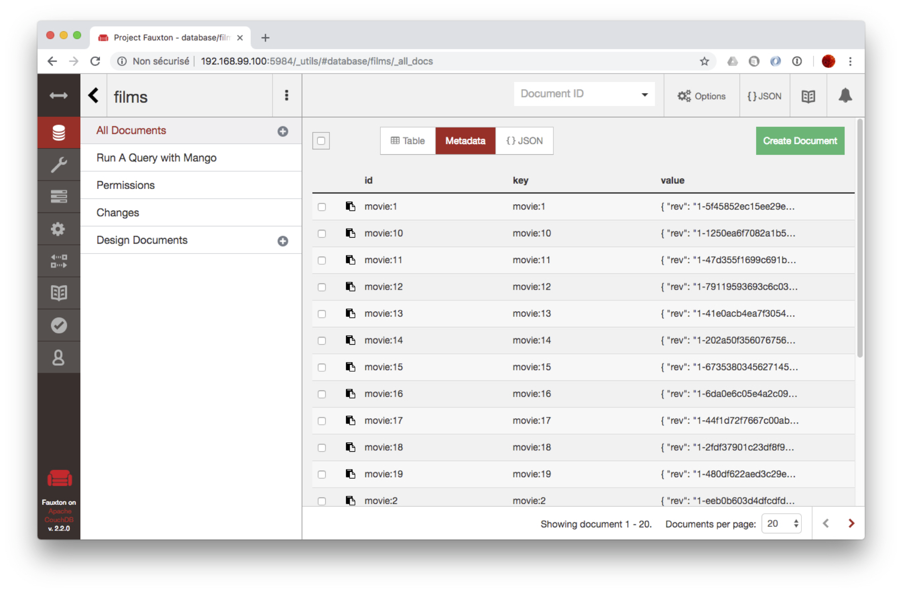
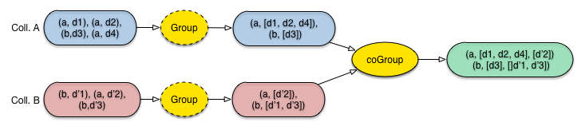

Traitements par lot¶
Nous avons étudié jusqu’à présent les recherches, exactes ou approchées, permettant de retrouver des informations en temps réel, ou du moins avec un délai de réponse compatible avec une utilisation interactive. Un autre scénario pour la gestion de très grandes collections est celui d’un traitement par lot qui consiste à extraire des informations à partir d’un sous-ensemble important de la collection voire même de la collection entière. C’est le cas par exemple pour la construction d’indicateurs statistiques, pour l’apprentissage de modèles IA, ou la production d’une collection dérivée, typiquement un index.
Pour ce type de scénario on ne s’attend pas à des temps de réponses de quelques secondes, au vu de la taille des données considérées. Les temps de parcours et de calcul peuvent prendre des minutes, des heures ou même des jours. Les problématiques sont plutôt de contrôler le temps d’exécution en parallélisant les calculs, d’une part, et de s’assurer de la terminaison de ces calculs même si des pannes surviennent, d’autre part.
Nous étudions dans ce chapitre la première problématique avec les modèles de chaîne de traitement (par traduction de « data processing pipelines » ou, simplement, workflow). Le principe général est de soumettre tous les documents d’une collection à une séquence d’opérateurs, comme par exemple:
un filtrage, en ne gardant le document que s’il satisfait certains critères;
une restructuration, en changeant la forme du document;
une annotation, par ajout au document de propriétés calculées;
un regroupement avec d’autres documents sur certains critères;
des opérations d’agrégation sur des groupes de documents.
Les opérateurs qui nous intéressent sont dits opérateurs de second ordre. Contrairement aux opérateurs classiques qui s’appliquent directement à des données, un opérateur de second ordre prend des fonctions en paramètre et applique ces fonctions à des données au cours d’un traitement immuable (par exemple un parcours séquentiel). Pour le traitement de données massives, on s’intéresse plus particulièrement aux opérateurs parallélisables qui permettent une forme d’industrialisation des calculs en les distribuant sur plusieurs machines.
Nous allons développer longuement ces notions un peu complexes. Pour commencer nous présentons deux des opérateurs qui sont à l’origine des systèmes de traitement de données massives, Map et Reduce. Nous introduirons ensuite d’autres opérateurs avec un langage simple d’utilisation, Pig latin. Les futurs chapitres viseront à expliquer la distribution des données et des calculs en vue d’obtenir une parallélisation efficace, ce que nous résumerons avec une étude de Spark, sans doute le principal système distribué à l’heure actuelle.
Nous nous en tenons donc pour l’instant (à l’exception d’une présentation intuitive dans la première session) au contexte centralisé (un seul serveur), ce qui permet de se familiariser avec les concepts et la pratique dans un cadre simple.
S1: MapReduce démystifié¶
Supports complémentaires:
Commençons par expliquer que MapReduce, en tant que modèle de calcul, ce n’est pas grand chose! Cette section propose une découverte « avec les mains », en étudiant comment cuisiner quelques recettes simples avec un robot MapReduce. La fin de la section récapitule en termes plus informatiques.
Un jus de pomme MapReduce¶
Ecartons-nous de l’informatique pour quelques moments. Cela nous laisse un peu de temps pour faire un bon jus de pomme. Vous savez faire du jus de pomme? C’est simple:
l’épluchage: il faut éplucher les pommes une par une;
le pressage: on met toutes les pommes dans un pressoir, et on récupère le jus.
Le processus est résumé sur la Fig. 40. Observons le cuisinier. Il a un tas de pomme à gauche, les prend une par une, épluche chaque pomme et place la pomme épluchée dans un tas à droite. Quand toutes les pommes sont épluchées (et pas avant!), on peut commencer la seconde phase.

Fig. 40 Les deux phases de la confection de jus de pomme¶
Comme notre but est de commencer à le formaliser en un modèle que nous appellerons à la fin MapReduce, nous distinguons précisément la frontière entre les deux phases, et les tâches effectuées de chaque côté.
À gauche, nous avons donc l’atelier de transformation: il consiste en un agent, l’éplucheur, qui prend une pomme dans son panier à gauche, produit une pomme épluchée dans un second panier à droite, et répète la même action jusqu’à ce que le panier de gauche soit vide.
À droite nous avons l’atelier d’assemblage: on lui confie un tas de pommes épluchées et il produit du jus de pomme.
Nous pouvons déjà tirer deux leçons sur les caractéristiques essentielles de notre processus élémentaire. La première porte sur l’atelier de transformation qui applique une opération individuelle à chaque produit.
Leçon 1: l’atelier de transformation est centré sur les pommes
Dans l’atelier de transformation, les pommes sont épluchées individuellement et dans n’importe quel ordre.
L’éplucheur ne sait pas combien de pommes il a à éplucher, il se contente de piocher dans le panier tant que ce dernier n’est pas vide. De même, il ne sait pas ce que deviennent les pommes épluchées, il se contente de les transmettre au processus général.
La seconde leçon porte sur l’atelier d’assemblage qui, au contraire, applique une transformation aux produits regroupés: ici, des tas de pommes.
Leçon 2: l’atelier d’assemblage est centré sur les tas de pommes
Dans l’atelier d’assemblage, on applique des transformations à des ensembles de pommes.
Tout celà est assez élémentaire, voyons si nous pouvons faire mieux en introduisant une première variante. Au lieu de cuire des pommes entières, on préfère les couper au préalable en quartiers. La phase d’épluchage devient une phase d’épluchage/découpage.
Cela ne change pas grand chose, comme le montre la Fig. 41. Au lieu d’avoir deux tas identiques à gauche et à droite avec des pommes, le cuisinier a un tas avec p pommes à gauche et un autre tas avec 4p quartiers de pommes à droite.

Fig. 41 Avec des quartiers de pomme¶
Cela nous permet quand même de tirer une troisième leçon.
Leçon 3: la transformation peut modifer le nombre et la nature des produits
La première phase n’est pas limitée à une transformation un pour un des produits consommés. Elle peut prendre en entrée des produits d’une certaine nature (des pommes), sortir des produits d’une autre nature (des quartiers de pomme épluchées), et il peut n’y avoir aucun rapport fixe entre le nombre de produits en sortie et le nombre de produits en entrées (on peut jeter des pommes pourries, couper une petite pomme en 4 ou en 6, une grosse pomme en 8, etc.)
Nous avons notre premier processus MapReduce, et nous avons identifié ses caractéristiques principales. Il devient possible de montrer comment passer à grande échelle dans la production de jus de pomme, sans changer le processus.
Beaucoup de jus de pomme¶
Votre jus de pomme est très bon et vous devez en produire beaucoup: une seule personne ne suffit plus à la tâche. Heureusement la méthode employée se généralise facilement à une brigade de n éplucheurs.
répartissez votre tas de pommes en n sous-tas, affectés chacun à un éplucheur;
chaque éplucheur effectue la tâche d’épluchage/découpage comme précédemment;
regroupez les quartiers de pomme et pressez-les.
Il se peut qu’un pressoir ne suffise plus: dans ce cas affectez c pressoirs et répartissez équitablement les quartiers dans chacun. Petit inconvénient: vous obtenez plusieurs fûts de jus de pomme, un par pressoir, avec une qualité éventuellement variable. Ce n’est sans doute pas très grave.
Important
Notez que cela ne marche que grâce aux caractéristiques identifiées par la leçon N° 1 ci-dessus. Si l’ordre d’épluchage était important par exemple, ce ne serait pas si simple car il faudrait faire attention à ce que l’on confie à chaque éplucheur; idem si l’épluchage d’une pomme dépendait de l’épluchage des autres.
La Fig. 42 montre la nouvelle organisation de vos deux ateliers. Dans l’atelier de transformation, vous avez n éplucheurs qui, chacun, font exactement la même chose qu’avant: ils produisent des tas de quartiers de pomme. Dans l’atelier d’assemblage, vous avez r pressoirs: un au minimum, 2, 3 ou plus selon les besoins. Attention: il n’y aucune raison d’imposer comme contrainte que le nombre de pressoirs soit égal au nombre de éplucheurs. Vous pourriez avoir un très gros pressoir qui suffit à occuper 10 éplucheurs.

Fig. 42 Parallélisation de la production de jus de pomme¶
Vous avez parallélisé votre production de jus de pomme. Remarque essentielle: vous n’avez pas besoin de recruter des éplucheurs avec des compétences supérieures à celles de votre atelier artisanal du début. Chaque éplucheur épluche ses pommes et n’a pas besoin de se soucier de ce que font les autres, à quel rythme ils travaillent, etc. Vous n’avez pas non plus besoin d’un matériel nouveau et radicalement plus cher. En d’autres termes vous avez défini un processus qui passe sans douleur à un stade industriel où seulent comptent l’organisation et l’affecation de ressources, pas l’augmetation des compétences.
Vous pouvez même prétendre que la rentabilité économique est préservée. Si un éplucheur épluche 50 Kgs de pomme par jour, 10 éplucheurs (avec le matériel correspondant) produiront 500 Kgs par jour! C’est aussi une question de matériel à affecter au processus: il est clair que si vous n’avez qu’un seul économe (le couteau qui sert à éplucher) ça ne marche pas. Mais si la production de jus de pomme est rentable avec un éplucheur, elle le sera aussi pour 10 avec le matériel correspondant. Nous dirons que le processus est scalable, et cela vaut une quatrième leçon.
Leçon 4: parallélisation et scalabilité (linéaire)
La production de jus de pomme est parallélisable et proportionnelle aux ressources (humaines et matérielles) affectées.
Votre processus a une seconde caractéristique importante (qui résulte de la remarque déjà faire que les éplucheurs sont indépendants les uns des autres). Si un éplucheur éternue à répétition sur son tas de pomme, s’il épluche mal ou si les quartiers de pomme à la fin de l’épluchage tombent par terre, cela ne remet pas en cause l’ensemble de la production mais seulement la petite partie qui lui était affectée. Il suffit de recommencer cette partie-là. De même, si un pressoir est mal réglé, cela n’affecte pas le jus de pomme préparé dans les autres et les dégâts restent locaux.
Leçon 5: le processus est robuste
Une défaillance affectant la production de jus de pomme n’a qu’un effet local et ne remet pas en cause l’ensemble de la production.
Les leçons 4 et 5 sont les deux propriétés essentielles de MapReduce, modèle de traitement qui se prête bien à la distribution des tâches. Si on pense en terme de puissance ou d’expressivité, cela reste quand même très limité. Peut-on faire mieux que du jus de pomme? Oui, en adoptant la petite généralisation suivante.
Jus de fruits MapReduce¶
Pourquoi se limiter au jus de pomme? Si vous avez une brigade d’éplucheurs de premier plan et des pressoirs efficaces, vous pouvez aussi envisager de produire du jus d’orange, du jus d’ananas, et ainsi de suite. Le processus consistant en une double phase de transformation individuelle des ingrédients, puis d’élaboration collective convient tout à fait, à une adaptation près: comme on ne peut pas presser ensemble des oranges et les pommes, il faut ajouter une étape initiale de tri/regroupement dans l’atelier d’assemblage.
En revanche, pendant la première phase, on peut soumettre un tas indifférencé de pommes/oranges/ananas à un même éplucheur. L’absence de spécialisation garantit ici une meilleure utilisation de votre brigade, une meilleure adaptation aux commandes, une meilleure réactivité aux incidents (pannes, blessures, cf. exercices).
{kind=link}

Fig. 43 Production de jus de fruits en parallèle¶
La Fig. 43 montre une configuration de vos ateliers de production de jus de fruit, avec 4 ateliers de transformation, et 1 atelier d’assemblage.
Résumons: chaque éplucheur a à sa gauche un tas de fruits (pommes, oranges, ananas). Il épluche chaque ingrédient, un par un, et les transmet à l’atelier d’assemblage. Cet atelier d’assemblage comporte maintenant une trieuse qui envoie chaque fruit vers un tas homogène, transmis ensuite à un pressoir dédié. Le processus reste parallélisable, avec les mêmes propriétés de scalabilité que précedemment. Nous avons simplement besoin d’une opération supplémentaire.
Une question non triviale en générale est celle du critère de tri et de regroupement. Dans le cas des pommes, oranges et ananas, on peut supposer que l’opérateur fait facilement la distinction visuellement. Pour des cas plus subtils (vous distinguez une variété de pomme Reinette d’une Jonagold?) il nous faut une méthode plus robuste. Les produits fournis par l’atelier d’assemblage doivent être étiquetés au préalable par l’opérateur de l’atelier de transformation.
Leçon 6: phase de tri / regroupement, étiquetage
Si les produits doivent être traitées par catégorie, il faut ajouter une phase de tri / regroupement au début de l’atelier d’assemblage. Le tri s’appuie sur une étiquette associée à chaque produit en entrée, indiquant le groupe d’appartenance.
Et finalement, comment faire si nous mettons en place plusieurs ateliers d’assemblage? Deux choix sont possibles:
spécialiser chaque atelier à une ou plusieurs catégories de fruits;
ne pas spécialiser les ateliers, et simplement répliquer l’organisation de la Fig. 43 où un atelier d’assemblage sait presser tous les types de fruits.
Les deux choix se défendent sans doute (cf. exercices), mais dans le modèle MapReduce, c’est la spécialisation (choix 1) qui s’impose, pour des raisons qui tiennent aux propriétés des méthodes d’agrégation de données, pas toujours aussi simple que de mélanger deux jus d’oranges.
Dans une configuration avec plusieurs ateliers d’assemblage, chacun est donc spécialisé pour traiter une ou plusieurs catégories. Bien entendu, il faut s’assurer que chaque catégorie est prise en charge par un atelier. C’est le rôle d’une nouvelle machine, le répartiteur, illustré par la Fig. 44. Nous avons deux ateliers d’assemblage, le premier prenant en charge les pommes et les oranges, et le second les ananas.

Fig. 44 Production en parallèle, avec répartition vers des ateliers d’assemblage spécialisés¶
C’est fini! Cette fois nous avons une métaphore complète d’un processus MapReduce dans un contexte Cloud/Big Data. Tirons une dernière leçon avant de le reformuler en termes abstraits/informatiques.
Leçon 7: répartition vers les ateliers d’assemblage
Si nous avons plusieurs ateliers d’assemblage, il faut mettre en place une opération de répartition qui envoie chaque type de fruit vers l’atelier spécialisé. Cette opération doit garantir que chaque type de fruit a son atelier.
On peut envisager de nombreuses variantes qui ne remettent pas en cause le modèle global d’exécution et de traitement. Une réflexion sur ces variantes est proposée en exercice.
Le modèle MapReduce¶
Il est temps de prendre un peu de hauteur (?) pour caractériser le modèle MapReduce en termes informatiques.
Important
Pour l’instant, nous nous concentrons uniquement sur la compréhension de ce que spécifie un traitement MapReduce, et pas sur la manière dont ce traitement est exécuté. Nous savons par ce qui précède qu’il est possible de le paralléliser, mais il est également tout à fait autorisé de l’exécuter sur une seule machine en deux étapes. C’est le scénario que nous adoptons pour l’instant, jusqu’au moment où nous aborderons les calculs distribués.
Le principe de MapReduce est ancien et provient de la programmation fonctionnelle. Il se résume ainsi: étant donné une collection d’items, on applique à chaque item un processus de transformation individuelle (phase dite « de Map ») qui produit des valeurs intermédiaires étiquetées. Ces valeurs intermédiaires sont regroupées par étiquette et soumises à une fonction d’assemblage (on parlera plus volontiers d’agrégation en informatique) appliquée à chaque groupe (phase dite « de Reduce »). La phase de Map correspond à notre atelier de transformation, la phase de Reduce à notre atelier d’assemblage.
Reprenons le modèle dans le détail.
Notion d’item en entrée (document)
Un item d’entrée est une valeur quelconque apte à être soumise à la fonction de transformation. Dans tout ce qui suit, nos items d’entrée seront des documents structurés.
Dans notre exemple culinaire, les items d’entrées sont les fruits « bruts »: pommes, oranges, ananas, etc. La transformation appliquée aux items est représentée par une fonction de Map.
Notion de fonction de Map
La fonction de Map, notée \(F_{map}\) est appliquée à chaque item de la collection, et produit zéro, une ou plusieurs valeurs dites « intermédiaires », placées dans un accumulateur.
Dans notre exemple, \(F_{map}\) est l’épluchage. Pour un même fruit, on produit plusieurs valeurs (les quartiers), voire aucune si le fruit est pourri. L’accumulateur est le tas à droite du cuisinier.
Il est souvent nécessaire de partitionner les valeurs produites par le map en plusieurs groupes. Il suffit de modifier la fonction \(F_{map}\) pour qu’elle émette non plus une valeur, mais associe chaque valeur au groupe auquel elle appartient. \(F_{map}\) produit, pour chaque item, une paire (k, v), où k est l’identifiant du groupe et v la valeur à placer dans le groupe. L’identifiant du groupe est déterminé à partir de l’item traité (c’est ce que nous avons informellement appelé « étiquette » dans la présentation de l’exemple.)
Dans le modèle MapReduce, on appelle paire intermédiaire les données produites par la phase de Map.
Notion de paire intermédiaire
Une paire intermédiaire est produite par la fonction de Map; elle est de la forme (k, v) où k est l’identifiant (ou clé) d’un groupe et v la valeur extraite de l’item d’entrée par \(F_{map}\).
Pour notre exemple culinaire, il y a trois groupes, et donc
trois identifiants possibles: pomme, orange, ananas.
À l’issue de la phase de Map, on dispose donc d’un ensemble de paires intermédiaires. Chaque paire étant caractérisée par l’identifiant d’un groupe, on peut constituer les groupes par regroupement sur la valeur de l’identifiant. On obtient des groupes intermédiaires.
Notion de groupe intermédiaire
Un groupe intermédiaire est l’ensemble des valeurs intermédiaires associées à une même valeur de clé.
Nous aurons donc le groupe des quartiers de pomme, le groupe des quartiers d’orange, et le groupe des rondelles d’ananas. On entre alors dans la seconde phase, dite de Reduce. La transformation appliquée à chaque groupe est définie par la fonction de Reduce.
Notion de fonction de Reduce
La fonction de Reduce, notée \(F_{red}\), est appliquée à chaque groupe intermédiaire et produit une valeur finale. L’ensemble des valeurs finales (une pour chaque groupe) constitue le résultat du traitement MapReduce.
Résumons avec la Fig. 45, et plaçons-nous maintenant dans le cadre de nos bases documentaires. Nous avons une collection de documents \(d_1, d_2, \cdots, d_n\). La fonction \(F_{map}\) produit des paires intermédiaires sous la forme de documents \(d^j_i\), dont l’identifiant (\(j\)) désigne le groupe d’appartenance. Notez les doubles flêches: un document en entrée peut engendrer plusieurs documents en sortie du map. \(F_{map}\) place chaque \(d^j_i\) dans un groupe \(G_j, j \in [1, k]\). Quand la phase de map est terminée (et pas avant!), on peut passer à la phase de reduce qui applique successivement \(F_{red}\) aux documents de chaque groupe. On obtient, pour chaque groupe, une valeur (un document de manière générale) \(v_j\).
{kind=link}

Fig. 45 MapReduce (en centralisé)¶
Voici pour la théorie. En complément, notons dès maintenant que ce mécanisme a quelques propriétés intéressantes:
il est générique et s’applique à de nombreux problèmes,
il se parallélise très facilement;
il est assez tolérant aux pannes dans une contexte distribué.
La première propriété doit être fortement relativisée: on ne fait quand même pas grand chose, en termes d’algorithmique, avec MapReduce et il ne faut surtout par surestimer la capacité de ce modèle de calcul à prendre en charge des traitements complexes.
Cette limitation est compensée par la parallélisation et la tolérance aux pannes. Pour ces derniers aspects, il est important que chaque document soit traité indépendamment du contexte. Concrètement, l’application de \(F_{map}\) à un document d doit donner un résultat qui ne dépend ni de la position de d dans la collection, ni de ce qui s’est passé avant ou après dans la chaîne de traitement, ni de la machine ou du système, etc. En pratique, cela signifie que la fonction \(F_{map}\) ne conserve pas un état qui pourrait varier et influer sur le résultat produit quand elle est appliquée à d.
Si cette propriété n’était pas respectée, on ne pourrait pas paralléliser et conserver un résultat invariant. Si \(F_{map}\) dépendait par exemple du système d’exploitation, de l’heure, ou de n’importe quelle variable extérieure au document traité (un état), l’exécution en parallèle aboutirait à des résultats non déterministes.
Concevoir un traitement MapReduce¶
Quelques conseils pour finir sur la conception d’un traitement MapReduce. En un mot: c’est très simple, à condition de se poser les bonnes questions et de faire preuve d’un minimum de rigueur.
Les questions à se poser¶
Questions pour la phase de Map:
Il faut être clair sur la nature des documents que l’on traite en entrée. D’où viennent-ils, quelle est leur structure? Un traitement MapReduce s’applique à un flux de documents, on ne peut rien faire si on ne sait pas en quoi ils consistent.
Quels sont les groupes que je veux constituer? Combien y en a-t-il? Comment les identifier (valeur de clé identifiant un groupe, l’étiquette)? Comment déterminer le ou les étiquettes d’un ou de plusieurs groupes dans un document en entrée?
Quelles sont les valeurs intermédiaires que je veux produire à partir d’un document et placer dans des groupes? Comment les produire à partir d’un document?
Ces questions sont nécessaires (et pratiquement suffisantes) pour savoir ce que doit faire la fonction de Map. Pour la fonction de Reduce, c’est encore plus simple:
Quelle est la nature de l’agrégation qui va prendre un groupe et produire une valeur finale?
Et c’est tout, il reste à traduire en termes de programmation.
Un peu de rigueur¶
Un traitement MapReduce se spécifie sous la forme de deux fonctions
La fonction de Map prend toujours en entrée un (un seul) document; elle produit toujours des paires (k, v) où k est l’étiquette (la clé) du groupe et v la valeur intermédiaire.
La fonction de Reduce prend toujours en entrée une paire (k, list(v)), où k est l’étiquette (la clé) du groupe et list(v) la liste des valeurs du groupe.
Spécifier un traitement, c’est donc toujours définir deux fonctions avec les caractéristiques ci-dessus. Le corps de chaque fonction doit indiquer, respectivement:
comment on produit des paires (k, v) à partir d’un document (fonction de Map, transformation);
comment on on produit une valeur agrégée V à partir d’une paire (k, list(v)).
Pratiques, réflechissez, vérifiez que vous avez bien compris!
Quiz¶


S2: MapReduce et CouchDB¶
Supports complémentaires
CouchDB propose un moteur d’exécution MapReduce, avec des fonctions javascript, mais dans un but un peu particulier: celui de créer des collections structurées dérivées par application d’un traitement MapReduce à une collection stockée. De telles collections sont appelées vues dans CouchDB. Leur contenu est matérialisé et maintenu incrémentalement.
Cette section introduit la notion de vue CouchDB, mais se concentre surtout sur la définition des fonctions de Map et de Reduce qui est rendue très facile grâce à l’interface graphique de CouchDB. Vous devriez avoir importé la collection des films dans CouchDB dans une base de données movies. C’est celle que nous utilisons, comme d’habitude, pour les exemples.
La notion de vue dans CouchDB¶
Comme dans beaucoup de systèmes NoSQL, une collection CouchDB n’a pas de schéma et les documents peuvent donc avoir n’importe quelle structure, ce qui ne va pas sans soulever des problèmes potentiels pour les applications. CouchDB répond à ce problème de deux manières: par des fonctions dites de validation, et par la possibilité de créer des vues.
Une vue dans CouchDB est une collection dont les éléments ont la forme (clé, document). Ces éléments sont calculés par un traitement MapReduce, stockés (on parle donc de matérialisation, contrairement à ce qui se fait en relationnel), et maintenus en phase avec la collection de départ. Les vues permettent de structurer et d’organiser un contenu.
La définition d’une vue est stockée dans CouchDB sous la forme de documents JSON dits « documents de conception » (design documents). Pour tester une nouvelle définition, on peut aussi créer des vues temporaires: c’est ce qui nous intéresse directement, car nous allons pouvoir tester le MapReduce de CouchDB grâce à l’interface de définition de ces vues temporaires
Accédez à l’interface d’administration de CouchDB à l’URL _utils,
puis choisissez la base des films (que vous devez avoir chargé
en expérimentant Docker). Vous devriez avoir l’affichage de la
Fig. 46.
{kind=link}

Fig. 46 La collections films vues par l’interface de CouchDB¶
Dans le menu de gauche, choissisez l’option « New view » dans le menu « Design documents ». Dans le menu déroulant « Reduce », choisissez l’option « Custom » pour indiquer que vous souhaitez définir votre propre fonction de Reduce.
On obtient un formulaire avec deux fenêtres pour, respectivement, les fonctions de Map et de Reduce (Fig. 47).

Fig. 47 Définition des vues temporaires.¶
Avant de passer aux fonctions MapReduce, donnez un nom à votre vue dans le champ en haut à droite.
Les fonctions Map et Reduce¶
Avec CouchDB, la fonction de Map est obligatoire, contrairement à la fonction de Reduce.
La fonction Map par défaut ne fait rien d’autre qu’émettre les documents de la base,
avec une clé null.
function(doc) {
emit(null, doc);
}
Toute fonction de Map prend un document en entrée, et appelle la fonction
emit pour produire des clés intermédiaires.
Produisons une première fonction de Map qui produit une vue dont
la clé est le titre du document, et la valeur le metteur en scène.
function(doc)
{
emit(doc.title, doc.director)
}
À vous de tester. Vous devriez (en actionnant le bouton « Create and build index ») obtenir l’affichage de la Fig. 48.

Fig. 48 Définition et test d’une vue¶
Important
Pour être sûr d’activer la fonction de Reduce, cochez la case « Reduce » dans l’interface de CouchDB. Cette case se trouve dans la fenêtre des options (montrée sur la Fig. 48).
Un deuxième exemple: la vue produit la liste des acteurs (c’est la clé), chacun associé au film dans lequel il joue (c’est la valeur). C’est un cas où la fonction de Map émet plusieurs paires intermédiaires.
function(doc)
{
for (i = 0; i < doc.actors.length; i++) {
emit({"prénom": doc.actors[i].first_name, "nom": doc.actors[i].last_name}, doc.title) ;
}
}
On peut remarquer que la clé peut être un document composite. À vous de tester cette nouvelle vue. Vous remarquerez sans doute que les documents de la vue sont triés sur la clé. C’est un effect indirect de l’organisation sous forme d’arbre-B, qui repose sur l’ordre des clés indexées. Pour MapReduce, le fait que les paires intermédiaires soient triées facilite les regroupements sur la clé puisque les documents à regrouper sont consécutifs dans la liste.
Vérifiez: cherchez dans la liste des documents de la vue Bruce Willis par exemple (ou Adam Driver qui est plus près de la première page). Vous remarquerez qu’il apparaît pour chaque film dans lequel il joue un rôle, et que toutes ces occurrences sont en séquence dans la liste. Pour effectuer ce regroupement, on applique une fonction de Reduce. La voici:
function (key, values) {
return values.length;
}
À vous de continuer en expérimentant l’interface et en étudiant le résultat intermédiaire (sans appliquer de fonction Reduce) puis le résultat final.
Mise en pratique¶
Exercice MEP-S2-1: quelques programmes MapReduce à produire
Outre les commandes de découverte de CouchDB décrites précédemment, voici quelques programmes à produire
Donnez, pour chaque année, le nombre de films parus cette année-là. Puis donnez pour chaque année la liste des titres de ces films.
Donnez, pour chaque metteur en scène, la liste des films qu’il a réalisés.
S3: Spécification de traitements distribués avec Pig¶
Supports complémentaires
MapReduce est un système initialement orienté vers les développeurs qui doivent concevoir et implanter la composition de plusieurs jobs pour des algorithmes complexes qui ne peuvent s’exécuter en une seule phase. Cette caractéristique rend les systèmes MapReduce difficilement accessibles à des non-programmeurs. De plus, disposer seulement de deux opérateurs assez rudimentaires n’est pas très satisfaisant pour des traitements complexes.
Très tôt après l’apparition des premières versions de systèmes MapReduce comme Hadoop sont apparus des propositions visant d’une part à définir des langages de plus haut niveau permettant de spécifier des opérations complexes sur les données en limitant la programmation, et d’autre d’étendre la collection des opérateurs disponibles. L’initiative est souvent venue de communautés familières des bases de données et désirant retrouver la simplicité et la « déclarativité » du langage SQL, transposées dans le domaine des chaînes de traitements pour données massives.
Avant d’étudier un système complet avec Spark, nous commençons ici avec le langage Pig latin, une des premières tentatives du genre, une des plus simples, et surtout l’une des plus représentatives des opérateurs de manipulation de données qu’il est possible d’exécuter sous forme de chaînes de traitement conservant la scalabilité et la gestion des pannes.
Pig latin (initialement développé par un laboratoire Yahoo!) est un projet Apache disponible à http://pig.apache.org. Il n’évolue plus depuis longtemps mais la version finale est suffisante pour tester l’effet des opérateurs. Vous avez (au moins) deux possibilités pour l’installation.
Utilisez la machine Docker https://hub.docker.com/r/hakanserce/apache-pig/
Ou récupérez la dernière version sous la forme d’une archive compressée et décompressez-la quelque part, dans un répertoire que nous appellerons
pigdir.
Nous utiliserons directement l’interpréteur de scripts (nommé grunt) qui se lance avec:
<pigdir>/bin/pig -x local
L’option local indique que l’on teste les scripts en local, ce qui permet
de les mettre au point sur de petits jeux de données avant de passer à une exécution distribuée à grande échelle
dans un framework MapReduce.
Cet interpréteur affiche beaucoup de messages, ce qui devient rapidement désagréable. Pour s’en débarasser,
créer un fichier nolog.conf avec la ligne:
log4j.rootLogger=fatal
Et lancez Pig en indiquant que la configuration des log est dans ce fichier:
<pigdir>/bin/pig -x local -4 nolog.conf
Une session illustrative¶
Pig applique des opérateurs à des flots de données semi-structurées. Le flot initial (en entrée) est constituée par lecture d’une source de données quelconque contenant des documents qu’il faut structurer selon le modèle de Pig, à peu de choses près comparable à ce que proposent XML ou JSON.
Dans un contexte réel, il faut implanter un chargeur de données depuis la source. Nous allons nous contenter de prendre un des formats par défaut, soit un fichier texte dont chaque ligne représente un document, et dont les champs sont séparés par des tabulations. Nos documents sont des entrées bibliographiques d’articles scientifiques que vous pouvez récupérer à http://b3d.bdpedia.fr/files/journal-small.txt. En voici un échantillon.
2005 VLDB J. Model-based approximate querying in sensor networks.
1997 VLDB J. Dictionary-Based Order-Preserving String Compression.
2003 SIGMOD Record Time management for new faculty.
2001 VLDB J. E-Services - Guest editorial.
2003 SIGMOD Record Exposing undergraduate students to system internals.
1998 VLDB J. Integrating Reliable Memory in Databases.
1996 VLDB J. Query Processing and Optimization in Oracle Rdb
1996 VLDB J. A Complete Temporal Relational Algebra.
1994 SIGMOD Record Data Modelling in the Large.
2002 SIGMOD Record Data Mining: Concepts and Techniques - Book Review.
...
Voici à titre d’exemple introductif un programme Pig complet qui calcule le nombre moyen de publications par an dans la revue SIGMOD Record.
-- Chargement des documents de journal-small.txt
articles = load 'journal-small.txt'
as (year: chararray, journal:chararray, title: chararray) ;
sr_articles = filter articles BY journal=='SIGMOD Record';
year_groups = group sr_articles by year;
count_by_year = foreach year_groups generate group, COUNT(sr_articles.title);
dump count_by_year;
Quand on l’exécute sur notre fichier-exemple, on obtient le résultat suivant:
(1977,1)
(1981,7)
(1982,3)
(1983,1)
(1986,1)
...
Un programme Pig est essentiellement une séquence d’opérations, chacune prenant en entrée une collection de documents (les collections sont nommées bag dans Pig latin, et les documents sont nommés tuple) et produisant en sortie une autre collection. La séquence définit une chaîne de traitements transformant progressivement les documents.

Fig. 49 Un exemple de workflow (chaîne de traitements) avec Pig¶
Il est intéressant de décomposer, étape par étape, cette chaîne de traitement pour inspecter les collections intermédiaires produites par chaque opérateur.
Chargement. L’opérateur load crée une collection initiale
articles par chargement du fichier. On indique le schéma
de cette collection pour interpréter le contenu de chaque ligne.
Les deux commandes suivantes permettent d’inspecter respectivement le
schéma d’une collection et un échantillon de son contenu.
grunt> describe articles;
articles: {year: chararray,journal: chararray,title: chararray}
grunt> illustrate articles;
---------------------------------------------------------------------------
| articles | year: chararray | journal: chararray | title: chararray |
---------------------------------------------------------------------------
| | 2003 | SIGMOD Record | Call for Book Reviews.|
---------------------------------------------------------------------------
Pour l’instant, nous sommes dans un contexte simple où une collection peut être vue comme une table relationnelle. Chaque ligne/document ne contient que des données élémentaires.
Filtrage.
L’opération de filtrage avec filter opère comme une clause where en SQL. On peut exprimer
avec Pig des combinaisons Booléennes de critères sur les attributs des documents. Dans
notre exemple le critère porte sur le titre du journal.
Regroupement. On regroupe maintenant les tuples/documents par année
avec la commande group by. À chaque année on associe donc
l’ensemble des articles parus cette année-là, sous la forme d’un
ensemble imbriqué. Examinons la représentation de Pig:
grunt> year_groups = GROUP sr_articles BY year;
grunt> describe year_groups;
year_groups: {group: chararray,
sr_articles: {year: chararray,journal: chararray,title:chararray}}
grunt> illustrate year_groups;
group: 1990
sr_articles:
{
(1990, SIGMOD Record, An SQL-Based Query Language For Networks of Relations.),
(1990, SIGMOD Record, New Hope on Data Models and Types.)
}
Le schéma de la collection year_group, obtenu avec describe, comprend donc un attribut nommé group
correspondant à la valeur de la clé de regroupement (ici, l’année) et une collection
imbriquée nommée d’après la collection-source du regroupement (ici, sr_articles)
et contenant tous les documents partageant la même valeur pour la clé de regroupement.
L’extrait de la collection obtenu avec illustrate montre le cas de l’année 1990.
À la syntaxe près, nous sommes dans le domaine familier des documents semi-structurés. Si on compare avec JSON par exemple, les objets sont notés par des parenthèses et pas par des accolades, et les ensembles par des accolades et pas par des crochets. Une différence plus essentielle avec une approche semi-structurée de type JSON ou XML est que le schéma est distinct de la représentation des documents: à partir d’une collection dont le schéma est connu, l’interpréteur de Pig infère le schéma des collections calculées par les opérateurs. Il n’est donc pas nécessaire d’inclure le schéma avec le contenu de chaque document.
Le modèle de données de Pig comprend trois types de valeurs:
Les valeurs atomiques (chaînes de caractères, entiers, etc.).
Les collections (bags pour Pig) dont les valeurs peuvent être hétérogènes.
Les documents (tuples pour Pig), équivalent des objets en JSON: des ensembles de paires (clé, valeur).
On peut construire des structures arbitrairement complexes par imbrication de ces différents types. Comme dans tout modèle semi-structuré, il existe très peu de contraintes sur le contenu et la structure. Dans une même collection peuvent ainsi cohabiter des documents de structure très différente.
Application de fonctions. Souvenez-vous
de la notion d’opérateur de second ordre: ils
prennent en argument des fonctions à appliquer
à une collection. Ces fonctions servent à annoter, restructurer ou enrichir le
contenu des documents passant
dans le flux. Ici, la collection finale avg_nb est obtenue en appliquant une fonction standard count().
Dans le cas général, on applique des fonctions applicatives intégrées au contexte d’exécution Pig:
ces fonctions utilisateurs (User Defined Functions ou UDF)
sont appliquées par les opérateurs de second ordre d’un langage comme Pig
à de grandes collections, en mode distribué, et avec gestion
des pannes.
Les opérateurs¶
La table ci-dessous donne la liste des principaux opérateurs du langage Pig. Tous s’appliquent à une ou deux collections en entrée et produisent une collection en sortie.
Opérateur |
Description |
|---|---|
|
Applique une expression à chaque document de la collection |
|
Filtre les documents de la collection |
|
Ordonne la collection |
|
Elimine lse doublons |
|
Associe deux groupes partageant une clé |
|
Produit cartésien de deux collections |
|
Jointure de deux collections |
|
Union de deux collections |
Voici quelques exemples pour illustrer les aspects essentiels du langage, basés sur le fichier http://b3d.bdpedia.fr/files/webdam-books.txt. Chaque ligne contient l’année de parution d’un livre, le titre et un auteur.
1995 Foundations of Databases Abiteboul
1995 Foundations of Databases Hull
1995 Foundations of Databases Vianu
2012 Web Data Management Abiteboul
2012 Web Data Management Manolescu
2012 Web Data Management Rigaux
2012 Web Data Management Rousset
2012 Web Data Management Senellart
Le premier exemple ci-dessous montre une combinaison de group
et de foreach permettant d’obtenir une collection avec un document
par livre et un ensemble imbriqué contenant la liste des auteurs.
-- Chargement de la collection
books = load 'webdam-books.txt'
as (year: int, title: chararray, author: chararray) ;
group_auth = group books by title;
authors = foreach group_auth generate group, books.author;
dump authors;
L’opérateur foreach applique une expression aux attributs de chaque
document. Encore une fois, Pig est conçu pour que ces expressions puissent contenir
des fonctions externes, ou UDF (User Defined Functions), ce qui permet d’appliquer n’importe quel type
d’extraction ou d’annotation.
L’ensemble résultat est le suivant:
(Foundations of Databases,
{(Abiteboul),(Hull),(Vianu)})
(Web Data Management,
{(Abiteboul),(Manolescu),(Rigaux),(Rousset),(Senellart)})
L’opérateur flatten sert à « aplatir » un ensemble imbriqué.
-- On prend la collection group_auth et on l'aplatit
flattened = foreach group_auth generate group ,flatten(books.author);
On obtient:
(Foundations of Databases,Abiteboul)
(Foundations of Databases,Hull)
(Foundations of Databases,Vianu)
(Web Data Management,Abiteboul)
(Web Data Management,Manolescu)
(Web Data Management,Rigaux)
(Web Data Management,Rousset)
(Web Data Management,Senellart)
L’opérateur cogroup prend deux collections en entrée, crée pour chacune
des groupes partageant une même valeur de clé, et associe les groupes
des deux collections qui partagent la même clé. C’est un peu compliqué en apparence;
regardons la Fig. 50. Nous avons une collection A avec
des documents d dont la clé de regroupement vaut a ou b, et une collection
B avec des documents d”. Le cogroup commence par rassembler,
séparément dans A et B, les documents partageant la même valeur de clé.
Puis, dans une seconde phase, les groupes de documents provenant des deux
collections sont assemblés, toujours sur la valeur partagée de la clé.
{kind=link}

Fig. 50 L’opérateur cogroup de Pig.¶
Prenons une seconde collection, contenant des éditeurs (fichier http://b3d.bdpedia.fr/files/webdam-publishers.txt):
Fundations of Databases Addison-Wesley USA
Fundations of Databases Vuibert France
Web Data Management Cambridge University Press USA
On peut associer les auteurs et les éditeurs de chaque livre de la manière suivante.
--- Chargement de la collection
publishers = load 'webdam-publishers.txt'
as (title: chararray, publisher: chararray) ;
cogrouped = cogroup flattened by group, publishers by title;
Le résultat (restreint au premier livre) est le suivant.
(Foundations of Databases,
{ (Foundations of Databases,Abiteboul),
(Foundations of Databases,Hull),
(Foundations of Databases,Vianu)
},
{(Foundations of Databases,Addison-Wesley),
(Foundations of Databases,Vuibert)
}
)
Je vous laisse exécuter la commande par vous-même pour prendre connaissance du document complet. Il contient un document pour chaque livre avec trois attributs. Le premier est la valeur de la clé de regroupement (le titre du livre). Le second est l’ensemble des documents de la première collection correspondant à la clé, le troisième l’ensemble des documents de la seconde collection correspondant à la clé.
Il s’agit d’une forme de jointure qui regroupe, en un seul document, tous les documents des deux collections en entrée qui peuvent être appariés. On peut aussi exprimer la jointure ainsi:
-- Jointure entre la collection 'flattened' et 'publishers'
joined = join flattened by group, publishers by title;
On obtient cependant une structure différente de celle du cogroup, tout
à fait semblable à celle d’une jointure avec SQL, dans laquelle les informations
ont été « aplaties ».
(Foundations of Databases,Abiteboul,Fundations of Databases,Addison-Wesley)
(Foundations of Databases,Abiteboul,Fundations of Databases,Vuibert)
(Foundations of Databases,Hull,Fundations of Databases,Addison-Wesley)
(Foundations of Databases,Hull,Fundations of Databases,Vuibert)
(Foundations of Databases,Vianu,Fundations of Databases,Addison-Wesley)
(Foundations of Databases,Vianu,Fundations of Databases,Vuibert)
La comparaison entre cogroup et join montre
la flexibilité apportée par un modèle semi-structuré
et sa capacité à représenter des ensembles imbriqués. Une jointure
relationnelle doit produire des tuples « plats », sans imbrication, alors
que le cogroup autorise la production d’un état intermédiaire
où toutes les données liées sont associées dans un même document,
ce qui peut être très utile dans un contexte analytique.
Voici un dernier exemple montrant comment associer à chaque livre le nombre de ses auteurs.
books = load 'webdam-books.txt'
as (year: int, title: chararray, author: chararray) ;
group_auth = group books by title;
authors = foreach group_auth generate group, COUNT(books.author);
dump authors;
Exercices¶
Commençons par un exercice-type commenté.
Exercice Ex-Exo-type: exercice-type MapReduce
Enoncé.
L’énoncé est le suivant (il provient d’un examen des annales). Un système d’observation spatiale capte des signaux en provenance de planètes situées dans de lointaines galaxies. Ces signaux sont stockés dans une collection Signaux de la forme (idPlanète, date, contenu).
Le but est de déterminer si ces signaux peuvent être émis par une intelligence extra-terrestre. Pour cela les scientifiques ont mis au point les fonctions suivantes:
Fonction de structure: \(f_S(c): Bool\), prend un contenu en entrée, et renvoie
truesi le contenu présente une certaine structure,falsesinon.Fonction de détecteur d’Aliens: \(f_D(<c>): real\), prend une liste de contenus structurés en entrée, et renvoie un indicateur entre 0 et 1 indiquant la probabilité que ces contenus soient écrits en langage extra-terrrestre, et donc la présence d’Aliens!
Bien entendu, il y a beaucoup de signaux: c’est du Big Data. Le but est de produire une spécification MapReduce qui produit, pour chaque planète, l’indicateur de présence d’Aliens par analyse des contenus provenant de la planète.
Correction.
D’abord il faut se mettre en tête la forme des documents de la collection. En JSON ça ressemblerait à ça:
{"idPlanète" : "Moebius 756",
"date": "24/02/2067",
"contenu": "Xioinpoi <ubnnio 3980nklkn"
}
Nous savons que la fonction de Map reçoit un document de ce type, et doit émettre 0, 1 ou plusieurs paires clé-valeur. La première question à se poser c’est: quels sont les groupes que je dois constituer et quelle est la clé (« l’étiquette ») qui caractérise ces groupes. Rappelons que MapReduce c’est avant tout un moyen de regrouper des données (ou des quartiers de pomme, ou d’ananas, etc.).
Ici on a un groupe par planète. La clé du groupe est évidemment l’identifiant de la planète. Le squelette de notre fonction de Map est donc:
function fMap(doc) {
emit(doc.idPlanète, qqChose);
}
Ici c’est écrit en Javascript mais n’importe quel pseudo-code équivalent (ou du Java, ou du Scala, ou même du PHP…) fait l’affaire.
Quelle est la valeur à émettre? Ici il faut penser que la fonction de Reduce recevra une liste de ces valeurs et devra produire une valeur agrégée. Dans notre énoncé la valeur agrégée est un indicateur de présence d’Aliens, et cet indicateur est produit sur une liste de contenus structurés.
La fonction de Map doit donc émettre un contenu structuré. Comme tous ne le sont pas, on va appliquer la fonction \(f_S(c): Bool\) (si elle est citée dans l’énoncé, c’est qu’elle sert à quelque chose). Ce qui donne
function fMap(doc) {
if (fS(doc.contenu) == True) {
emit(doc.idPlanète, doc.contenu)
}
}
Notez bien que la fonction ne peut et ne doit accéder qu’aux informations du document (sauf cas de variables globale qui serait précisée).
Il ne reste plus qu’à écrire la fonction de Reduce. Elle reçoit toujours la clé d’un groupe et la liste des valeurs affectées à ce groupe. C’est l’occasion d’utiliser la seconde fonction de l’énoncé:
function fReduce(idPlanète, contenusStruct) {
return (idPlanète, fD(contenusStruct))
}
}
C’est tout (pour cette fois). L’exemple est assez trivial, mais les mêmes principes s’appliquent toujours.
Exercice Ex-S1-1: production de jus de fruits: les variantes
Proposons des variantes à notre processus de production de jus de fruit tel qu’il est résumé par la Fig. 44. Pour chaque variante envisagée réfléchissez à ses avantages / inconvénients et exposez vos arguments.
peut-on trier les fruits à la fin de l’atelier de transformation, plutôt qu’au début de l’atelier d’assemblage?
et si on triait les fruits avant de les soumettre à l’atelier de transformation?
dans l’atelier d’assemblage, peut-on avoir un seul pressoir, ou faut-il autant de pressoirs que de types de fruits?
peut-on toujours se contenter d’un seul atelier d’assemblage?
discuter de la spécialisation des ateliers d’assemblage: MapReduce affecte chaque groupe à un seul atelier; pourrait-on produire du jus d’orange dans chaque atelier? Avantages? Inconvénients?
Correction
On peut trier à la fin de la transformation, mais ça ne suffit pas: il faut également fusionner les listes triées provenant d’ateliers de transformation distinct avant l’assemblage. Il est beaucoup plus efficace de fusionner des listes triées que des listes non triées, donc on peut considérer que c’est une option à considérer.
Rien ne dit que l’atelier de transformation va produire des fruits en sortie, même s’il en a en entrée. Donc ça ne sert à rien de trier (sauf cas particulier).
On peut avoir plusieurs pressoirs. En fait, en général on ne peut pas prévoir le nombre de groupes, et donc le nombre de pressoirs. Un même tâche effectue donc plusieurs assemblages, en séquence.
Oui, on peut toujours se contenter, fonctionnellement, d’un seul atelier d’assemblage. Il faut prendre garde à ce que ça ne devienne pas un goulot d’étranglement.
Dans un contexte de gestion de données, il est impératif d’agréger tous les documents d’un même groupe ensemble. Beaucoup de calcul statistiques ne sont pas additifs (la somme des moyennes et la moyenne des sommes diffèrent) et on ne peut donc pas manipuler des agrégations partielles.
Exercice Ex-S1-2: commençons à parler informatique
Vous avez un ensemble de documents textuels, et vous voulez connaître la fréquence d’utilisation de chaque mot. Si, par exemple, le mot « confiture » apparaît 1 fois dans le document A, deux fois dans le document B et 1 fois dans le document C, vous voulez obtenir (confiture, 4).
Quel est le processus Map Reduce qui prend en entrée les documents et fournit en sortie les paires (mot, fréquence)? Décrivez-le avec des petits dessins si vous voulez.
NB : ce genre de calcul est à la base de nombreux algorithmes d’analyse, et sert par exemple à construire des moteurs de recherche.
Correction
Supposons que le format des documents est le suivant
{"texte" : "Bla farine bla confiture bla sucre bla confiture ..."}
Il faut découper chaque texte en mots, associés à leur nombre d’occurrences dans le texte. Par exemple, (confiture, 2) si le mot apparaît deux fois. L’important est de comprendre que le critère de regroupement (l’étiquette) est le mot. Pour chaque mot on « émet » la paire (mot, nbOccurrences).
function fonctionMap (doc)
{
// On parcourt les mots du texte
for (mot in doc.texte) {
emit (mot, 1)
}
}
À noter: on émet plusieurs paires (clé, valeur) par document, autant qu’il y a de mots dans le document. Pour un même mot m, on émettra donc autant de fois (m, 1) qu’il y a d’occurrences de m.
Noter aussi que dans une spécification de haut niveau, on n’a pas besoin d’indiquer comment on découpe un texte en mot. Ca se fera au moment de l’implantation.
La phase d’agrégation se charge de cumuler les occurrences d’un même mot sur l’ensemble des documents.
function fonctionReduce (mot, occurrences)
{
return (mot, count (occurrences))
}
Exercice Ex-S1-3: continuons l’examen du 16 juin 2016
Reprenons les documents représentant les inscriptions des étudiants à des UEs. Voici deux exemples.
{ "_id": 978, "nom": "Jean Dujardin", "UE": [{"id": "ue:11", "titre": "Java", "note": 12}, {"id": "ue:27", "titre": "Bases de données", "note": 17}, {"id": "ue:37", "titre": "Réseaux", "note": 14} ] } { "_id": 476, "nom": "Vanessa Paradis", "UE": [{"id": "ue:13", "titre": "Méthodologie", "note": 17, {"id": "ue:27", "titre": "Bases de données", "note": 10}, {"id": "ue:76", "titre": "Conduite projet", "note": 11} ] }Spécifiez le calcul du nombre d’étudiants par UE, en MapReduce, en prenant en entrée des documents construits sur le modèle ci-dessus.
Correction
Une fonction de Map produit des paires (clé, valeur). La première question à se poser c’est: quelle est la clé que je choisis de produire? Rappelons que la clé est une sorte d’étiquette que l’on pose sur chaque valeur et qui va permettre de les regrouper.
Ici, on veut regrouper par UE pour pouvoir compter tous les étudiants inscrits. On va donc émettre une paire intermédiaire pour chaque UE mentionnée dans un document en entrée. Voici le pseudo-code.
function fonctionMap ($doc) # doc est un document centré étudiant { # On parcourt les UEs du tableau UEs for [$ue in $doc.UE] do emit ($ue.id, $doc.nom) done }Quand on traite le premier document de notre exemple, on obtient donc trois paires intermédiaires:
{"ue:11", "Jean Dujardin"} {"ue:27", "Jean Dujardin"} {"ue:37", "Jean Dujardin"}Et quand on traite le second document, on obtient:
{"ue:13", "Vanessa Paradis"} {"ue:27", "Vanessa Paradis"} {"ue:76", "Vanessa Paradis"}Toutes ces paires sont alors transmises à « l’atelier d’assemblage » qui les regroupe sur la clé. Voici la liste des groupes (un par UE).
{"ue:11", ["Jean Dujardin"]} {"ue:13", ["Vanessa Paradis"]} {"ue:27", ["Jean Dujardin", "Vanessa Paradis"]} {"ue:37", ["Jean Dujardin"]} {"ue:76", ["Vanessa Paradis"]}Il reste à appliquer la fonction de Reduce à chaque groupe.
function fonctionReduce ($clé, $tableau) { return ($clé, count($tableau) }Et voilà.
Exercice Ex-S1-4: algèbre linéaire distribuée
Nous disposons d’une matrice M de dimension \(N \times N\) représentant les liens entres les \(N\) pages du Web, chaque lien étant qualifié par un facteur d’importance (ou « poids »). La matrice est représentée par une collection \(C\) dans laquelle chaque document est de la forme {« id »: &23, « lig »: i, « col »: j, « poids »: \(m_{ij}\)}, et représente un lien entre la page \(P_i\) et la page \(P_j\) de poids \(m_{ij}\)
Exemple: voici une matrice \(M\) avec \(N=4\). La première cellule de la seconde ligne est donc représentée par un document {« id »: &t5x, « lig »: 2, « col »: 1, « poids »: 7}
\[\begin{split}M= \left[ {\begin{array}{cccc} 1 & 2 & 3 & 4 \\ 7 & 6 & 5 & 4 \\ 6 & 7 & 8 & 9 \\ 3 & 3 & 3 & 3 \\ \end{array} } \right]\end{split}\]Questions
Chaque ligne \(L_i\) de \(M\) peut être vue comme un vecteur décrivant la page \(P_i\). Spécifiez le traitement MapReduce qui calcule la norme de ces vecteurs à partir des documents de la collection \(C\) (rappel: la norme d’un vecteur \(V(x_1, x_2, \cdots, x_n)\) est \(\sqrt{x_1^2 + x_2^2 + \cdots + x_n^2}\)).
Nous voulons calculer le produit de la matrice avec un vecteur \(V(v_1, v_2, \cdots v_N)\) de dimension \(N\). Le résultat est un autre vecteur \(W\) tel que:
\[w_i = \Sigma_{j=1}^N m_{ij} \times v_j\]On suppose pour le moment que \(V\) tient en mémoire RAM et est accessible comme variable statique par toutes les fonctions de Map ou de Reduce. Spécifiez le traitement MapReduce qui implante ce calcul.
Correction
On connaît le format des documents. Le critère de regroupement est l’identifiant de la ligne. La valeur à émettre est le carré du poids
function fonctionMap (doc) { emit (doc.lig, doc.poids * doc.poids) }La fonction de Reduce recevra donc les carrés des poids d’une même ligne. Il restera à les cumuler pour obtenir la norme.
function fonctionReduce (lig, listePoids) { return (lig, sqrt (sum (listePoids))) }
Le produit de la matrice et du vecteur est presque identique. La fonction de Map multiplie chaque poids d’une ligne de la matrice par la coordonnées correspondante du vecteur \(V\) (supposé accessible comme variable globale).
function fonctionMap (doc)
{
emit (doc.lig, doc.poids * V[doc.col])
}
La fonction de Reduce est la même qu’auparavant.
Exercice Ex-S1-5: un peu plus difficile
On considère des documents représentant des articles ou ouvrages de recherche, avec la liste de leurs auteurs. Voici le format d’après un exemple.
{ "type": "Book", "title": "Bases de données distribuées", "year": 2020, "publisher": "Cnam", "authors": ["R. Fournier-S'niehotta", "P. Rigaux", "N. Travers"] }
On veut calculer, pour chaque trio d’auteurs (x, y, z), le nombre d’articles que ces trois auteurs ont co-signés. Précisions: si les auteurs d’un article sont un sur-ensemble de (x, y, z) (par ex. (x, u, v, y, w, z)) ça compte pour 1. L’ordre des auteurs ne compte pas: (z, y, x) est considéré comme une occurrence.
Comment faire ce calcul en MapReduce?
NB: le résultat est appelé support de (x,y,z), et c’est une mesure utilisée, entre autres, dans la découverte de règles d’association.
Correction
Pour chaque publication, on prend la liste des auteurs, et on en extrait toutes les combinaisons possibles de 3 auteurs distincts. S’il y a 5 auteurs par exemple, il y a \((5 \times 4 \times 3) / (3 \times 2)\) combinaisons possibles (révisez votre combinatoire si nécessaire).
Pour chaque combinaison C, il faut émettre la paire (C, 1). Le regroupement se fera sur la combinaison, et la somme des 1 donnera le nombre d’occurrences sur l’ensemble de la collection. Encore une fois, c’est le choix de la clé qui est essentiel.
Exercice Ex-S1-6: classons les fruits
On reçoit d’un fournisseur une livraison de fruits (pommes, ananas, oranges, etc). On décide d’effectuer un test qualité en leur donnant 0 ou 1 pour les critères suivants (trop mûr, tâché, déformé, etc).
Pour chaque espèce de fruit, on veut calculer la proportion de fruits trop mûrs. Comment faire avec MapReduce?
On veut faire le même calcul pour tous les critères. Comment faire?
NB: ce genre d’indicateur permet de construire des classeurs pour reconnaitre automatiquement l’espèce d’un fruit (enfin, pour produire un indicateur de probabilité d’appartenance à une espèce à une classe, avec choix de la classe la plus probable).
Correction
Pour chaque fruit, on émet (espèce, 1) ou (espèce, 0) selon que le fruit est trop mûr ou pas. Ensuite, la phase d’agrégation regroupe les paires pour la même espèce, et on calcule la fraction du nombre de 1 sur le nombre total du groupe.
Si on a trois critères, on émet (espèce, [i, j, k]) en généralisant le principe.

Ce cours de Philippe Rigaux est mis à disposition selon les termes de la licence Creative Commons Attribution - Pas d’Utilisation Commerciale - Partage dans les Mêmes Conditions 4.0 International.
Table Of Contents
- Introduction
- Préliminaires: Docker
- Modélisation de bases NoSQL
- Recherche exacte
- Etude de cas: Cassandra
- Cassandra - Travaux Pratiques
- Recherche approchée
- ElasticSearch - Travaux pratiques
- Traitements par lot
- Pig : Travaux pratiques
- Le cloud, une nouvelle machine de calcul
- Systèmes NoSQL: la réplication
- Systèmes NoSQL: le partitionnement
- Etude de cas: Apache Spark
- Annales des examens
Recherche
Saisissez un ou plusieurs mots-clés.